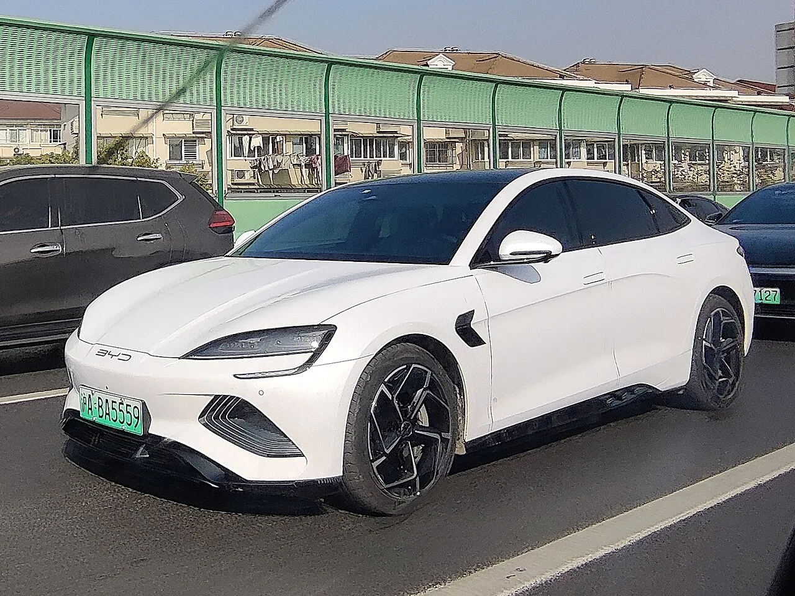

▲ 8월 국내 수입차 모델별 판매 1위를 차지한 테슬라 모델Y. 상하이 기가팩토리에서 생산돼 '중국산'으로 분류된다
1. 8월 수입차 판매, 테슬라 독주 속 중국 브랜드 약진
2026년 8월 국내 수입차 시장은 테슬라의 7개월 연속 1위 행진 속에 중국 브랜드 BYD의 약진이 두드러졌다. 브랜드별 판매량을 보면 테슬라가 10,400대로 압도적 1위를 지켰고, BMW 6,180대, 메르세데스-벤츠 4,037대가 뒤를 이었다. 4위는 3,002대를 기록한 BYD로, 전통의 수입차 강자인 도요타(1,015대)보다도 세 배 가까운 판매고를 올렸다. 테슬라와 BYD 두 브랜드의 판매량을 합치면 전체 수입차 시장의 약 45%에 달한다.

▲ BYD 씨라이언7. 8월 국내 판매 819대를 기록하며 수입차 모델별 판매 상위권에 이름을 올렸다 ⓒ Wikimedia Commons
2. 모델별 톱5 중 절반이 중국산
모델 단위로 보면 상위권에서 중국산 비중은 더욱 두드러진다. 1위는 9,638대가 팔린 테슬라 모델Y였는데, 이 물량은 중국 상하이 기가팩토리에서 생산된 차량이다. 2위 BYD 돌핀(1,202대), 3위 BYD 씨라이언7(819대)에 이어, 4위 테슬라 모델3(693대) 역시 상하이 생산분이다. 5위는 BYD 씨라이언6 DM-i(500대)가 차지했다. 상위 5개 모델 가운데 사실상 전부가 중국에서 만들어진 차량인 셈이다.
| 순위 | 모델 | 판매대수 | 생산국 |
|---|---|---|---|
| 1 | 테슬라 모델Y | 9,638대 | 중국(상하이) |
| 2 | BYD 돌핀 | 1,202대 | 중국 |
| 3 | BYD 씨라이언7 | 819대 | 중국 |
| 4 | 테슬라 모델3 | 693대 | 중국(상하이) |
| 5 | BYD 씨라이언6 DM-i | 500대 | 중국 |
📍 상반기 중국산 수입차 41.2%까지 확대
올해 상반기 국내에 들어온 중국산 수입차는 79,444대로, 전년 동기 대비 127.8% 늘었다. 이는 전체 수입차 등록 대수의 41.2%에 해당하는 규모다. 테슬라 상하이 생산분과 BYD 물량이 늘어나면서, 국내 수입차 제조국 통계에서 중국이 차지하는 비중은 매 분기 빠르게 커지는 추세다.
3. 왜 중국산이 강세인가 - 가격과 공급망
업계에서는 중국산 차량의 약진 배경으로 가격 경쟁력과 배터리 공급망을 꼽는다. 기사에서 구체적인 가격 수치가 제시되지는 않았지만, 관련 전문가는 "중국이 단순 제조를 담당하는 상황"이라고 짚었다. 테슬라가 상하이 기가팩토리를 아시아·유럽 시장 공급 거점으로 활용하는 것과 마찬가지로, BYD 역시 자국 내 배터리·부품 수직계열화를 기반으로 상대적으로 낮은 원가 구조를 국내 시장에 그대로 들여오고 있다는 분석이다. 8월 국내 전기차 등록은 15,183대였는데, 이 가운데 절반이 넘는 50.9%를 테슬라가 차지했다는 점도 전동화 전환과 중국산 확대가 맞물려 있음을 보여준다.

▲ BYD 돌핀. 8월 국내 판매 1,202대로 수입차 모델별 판매 2위에 올랐다 ⓒ Wikimedia Commons
4. 레거시 브랜드의 과제 - 소프트웨어와 자율주행
업계는 "기존 레거시 브랜드들은 자율주행과 소프트웨어로 앞서가야 하는 시기"라고 지적한다. 가격과 생산 단가에서 중국 브랜드를 단기간에 따라잡기 어려운 만큼, BMW·벤츠 등 기존 프리미엄 브랜드들은 결국 차량 소프트웨어 완성도와 운전자 보조·자율주행 기능의 격차로 승부를 볼 수밖에 없다는 진단이다. 실제로 BMW·벤츠 등은 최근 신차마다 대화형 인공지능 비서, 오버더에어(OTA) 업데이트, 고속도로 자율주행 기능을 앞세운 소프트웨어 중심 전략을 강조하는 추세다.
✅ 8월 수입차 판매, 이것만은 확인하세요
· 브랜드별 1위 테슬라(10,400대), 2위 BMW(6,180대), 3위 벤츠(4,037대), 4위 BYD(3,002대)
· 모델별 톱5 중 4개가 중국 생산(모델Y·모델3·BYD 돌핀·씨라이언7·씨라이언6 DM-i)
· 상반기 중국산 수입차 79,444대, 전년비 127.8%↑, 전체 수입차의 41.2%
· 테슬라+BYD 합산 점유율 약 45%, 8월 전기차 등록 중 테슬라 50.9%
· 업계 진단은 "레거시 브랜드는 소프트웨어·자율주행으로 승부해야 하는 시기"
5. 남은 변수 - 관세와 국산 브랜드의 대응
중국산 수입차의 성장세가 계속될지는 몇 가지 변수에 달려 있다. 미국을 중심으로 한 관세 정책 변화, 국내 정부의 중국산 전기차 보조금 기준 조정 여부, 그리고 현대차·기아 등 국내 브랜드의 가격·소프트웨어 대응 전략이 향후 시장 구도를 가를 핵심 변수로 꼽힌다. 관련 수치는 지피코리아 기사에서 확인할 수 있다. 바로가기

▲ BYD 씰이 중국 상하이 도로를 달리는 모습. BYD는 자국 내 배터리·부품 수직계열화를 앞세워 국내 시장에서도 가격 경쟁력을 유지하고 있다 ⓒ Wikimedia Commons
6. 정리
2026년 8월 국내 수입차 시장은 테슬라의 독주와 BYD의 약진 속에 중국산 차량이 판매 상위권을 사실상 장악하는 모습을 보였다. 모델별 톱5 중 4개가 중국에서 생산된 차량이었고, 상반기 중국산 수입차 비중은 41.2%까지 늘었다. 가격과 공급망에서 우위를 점한 중국 브랜드에 맞서, 기존 레거시 브랜드들은 결국 소프트웨어 완성도와 자율주행 경쟁력이라는 남은 승부처에서 격차를 벌려야 하는 상황에 놓였다.